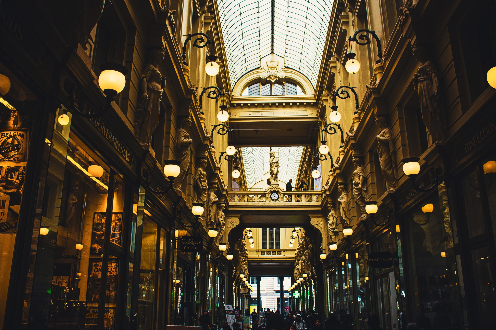
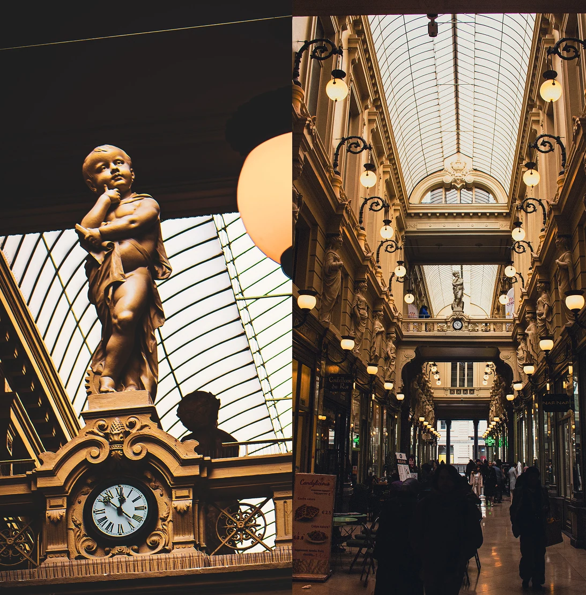

Galerie Saint-Hubert
Jean-Pierre Cluysenaar
VI
Jean-Pierre Cluysenaar
Un architecte, Jean-Pierre Cluysenaar, regarde la rue du Marché-aux-Herbes et la Montagne aux Herbes Potagères. Entre les deux : un dédale de ruelles étroites.
Il imagine une galerie.

750
Léopold Ier pose la première pierre le 6 mai 1846. Jusqu'à 750 ouvriers travaillent chaque jour sur le chantier.

Galerie du Roi, galerie de la Reine, 8,30 mètres de large chacune, 213 mètres au total. Une verrière continue à 18 mètres de hauteur. Bruxelles se hisse parmi les grandes villes européennes.
20 JUIN 1847
Les Galeries Saint-Hubert, c'est Bruxelles qui a compris que la richesse.